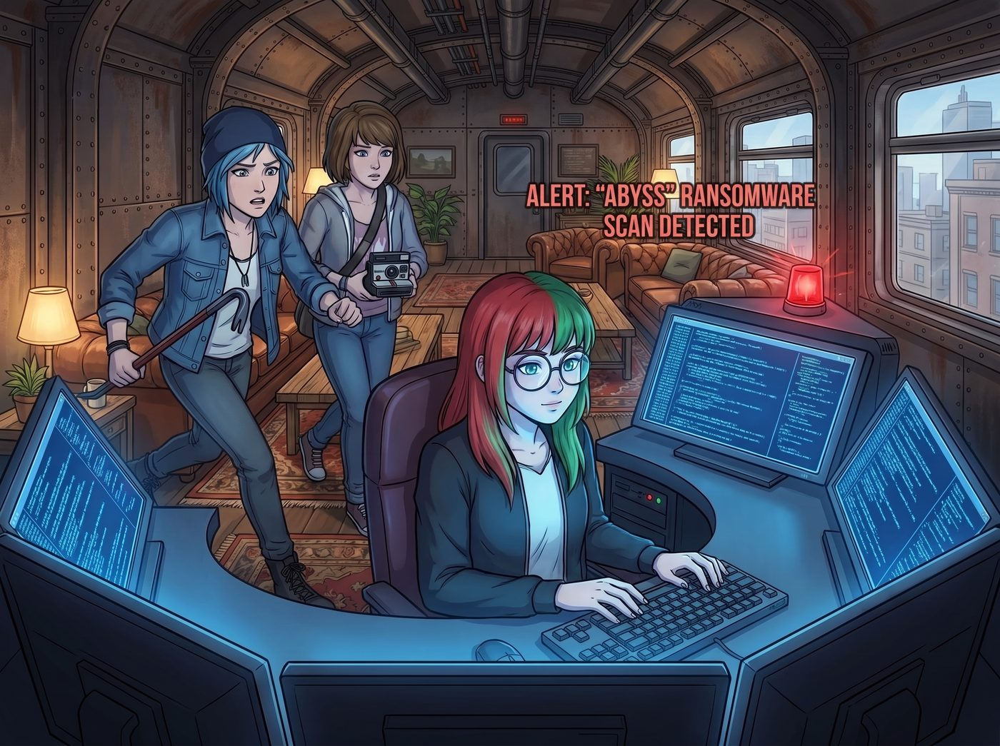
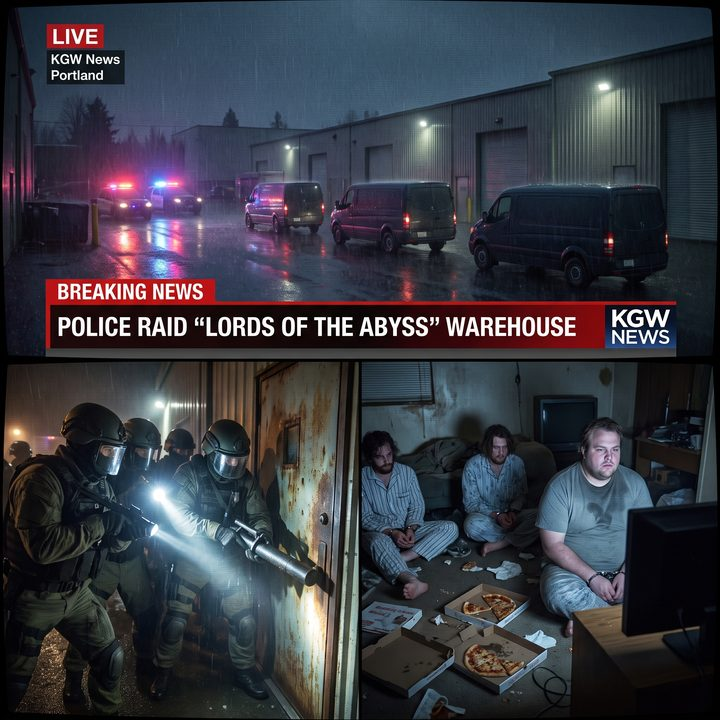

較小的惡（上）：數位屠宰場


二號車廂的警報器發出了一聲極其短促的、類似心電圖停止般的「滴」聲。
這不是聯邦追蹤，也不是警察臨檢。Lily 坐在由六個螢幕組成的環形工作站中心，修長的手指懸停在機械鍵盤上方。螢幕上的代碼瀑布般傾瀉，倒映在她那副圓框眼鏡上，閃爍著幽冷的藍光。
「發生什麼事了？！」Chloe 抄起一根撬棍從車廂尾部衝了過來，Max 緊隨其後，手裡捏著寶麗來相機。
「一個名為『深淵（Abyss）』的勒索軟體組織，剛剛試圖掃描我們的防火牆。」Lily 的聲音平靜得沒有一絲起伏，「他們失敗了，而且在掃描的過程中，把自己的位置暴露得一乾二淨。他們非常業餘，用的是一套滿是漏洞的俄羅斯開源代碼。」
「那就把他們趕走，然後我們繼續吃晚餐。」Victoria 坐在沙發上，慢條斯理地塗著指甲油。
「本來是這樣。」Lily 敲擊了幾下鍵盤，調出了一份新聞簡報，「但我追著那個位置看了一眼。過去一週，這群人加密了西雅圖南區三家非營利兒童診所的病歷庫，勒索兩百萬美金的加密貨幣。那些診所根本付不起。如果明天早上還拿不到解密金鑰，所有患兒的重症治療計畫都會被強制清空。」
車廂裡的空氣瞬間降至冰點。Kate 握緊了胸前的十字架，眼眶發紅；Chloe 的撬棍重重地砸在地上，咬牙切齒地罵了一句髒話。
「所以我們能做什麼？」Max 輕聲問，「妳不是說過，妳從來不駭進別人的系統嗎？」
「我不駭進去。」Lily 推了推眼鏡，「我也不需要。因為這群人,把門窗全都大敞著。」
一、業餘的門
接下來的兩個晚上，Lily 沒有攻擊任何東西。她只是「看」。
這些駭客或許懂得如何買一套現成的勒索病毒，但他們完全不懂如何管理一個龐大的雲端伺服器集群。他們的伺服器沒有設定存取權限，面向整個網際網路公開；他們的資料庫忘了設密碼；他們互相甩鍋的聊天紀錄，就掛在一個誰都能看的公開論壇上；他們甚至把叫外賣的發票截圖，傳到了同一個沒上鎖的雲端資料夾裡。
「這不叫入侵，Max 學姐。」Lily 一邊把那些公開畫面一張張存檔，一邊平靜地解釋，「這叫做,他們把家裡的門拆了,還在門口立了一塊牌子寫著『我在家』。我只是把路過時看到的東西，記了下來。」
她做的，是資安研究員每天都在做的事：從對方到處漏風的公開基礎設施裡，蒐集任何一個看得見的線索，再把它們拼成一張完整的圖。
兩個晚上下來，那張圖上有了這群人的真實姓名、常用帳號、一整套作案的時間線，以及他們的落腳地點：不在西雅圖，而在往南三個小時車程的波特蘭郊區，一處破敗工業園區裡的舊倉庫。
「他們勒索的是西雅圖的診所，」Max 看著地圖，有點意外，「人卻躲在波特蘭？」
「網路犯罪不需要跟受害者住在同一座城市，Max 學姐。」Lily 說，「他們只需要一條網路線，和一個以為沒人找得到的地方。」
二、那把早就存在的鑰匙
至於那三家診所最急的解密金鑰，Lily 連拼圖都不用。
「他們用的這套勒索病毒，是一個叫 Abyss-Locker 的老舊開源版本。」Lily 調出一個資安社群的公開頁面，「它的加密演算法兩年前就被研究員破解過了。網路上有一個免費的解密工具，誰都能下載。」
她頓了頓，語氣裡透著一絲對這群人的無語：
「這群人勒索了兩百萬美金，用的卻是一把全世界都有備用鑰匙的鎖。他們自己大概都不知道。」
那天深夜，三家兒童診所的院長信箱，各收到了一封匿名郵件。裡面是那個公開解密工具的下載連結、一份 Lily 寫的、一步一步的操作說明，以及一句話：「你們的病歷可以救回來，不需要付任何錢。請立刻備份。」
天亮之前，三家診所的病歷庫，全部恢復了。
三、交給該抓人的人
剩下的，是那群人本身。
「我不會去碰他們的加密貨幣。」Lily 對躍躍欲試的 Chloe 說，「把黑錢吸走再捐出去，聽起來很爽，但那依然是我在當法官、當執行人。那不是我該做的事。」
「那妳要怎麼辦？放他們走？」
「不。」Lily 打開一個新的文件，「我要把我這兩個晚上看到的所有東西，整理成一份報告。」
那是一份長達兩百頁的 PDF。排版精美，字體字號完全符合聯邦法院呈堂證供的標準。每一張截圖都標註了擷取的時間和公開來源，每一條推論都附上了佐證，連附錄的目錄和頁碼都一絲不苟。它乾淨、完整、可查證，像一份教科書級的刑事偵查卷宗。
Lily 把這份報告，匿名寄給了 FBI 的網路犯罪調查局。
「然後呢？」Chloe 問。
「然後，」Lily 推了推眼鏡，「就交給該抓人的人去抓人。破門、上銬、起訴、送進法庭——那是他們的工作，有他們的程序。我的工作，到按下『傳送』為止。」
四、按在披薩盒上
三天後的深夜，奧林匹亞半島下著小雨。
那台被 Chloe 改裝過的舊電視機，被 Lily 接上了一個波特蘭當地新聞台的直播訊號。畫面裡,一處破敗工業園區被警燈的紅藍光染亮。
沒有人需要開三小時的車去現場。她們就擠在沙發上，看著新聞。
鏡頭裡，三輛沒有標誌的廂型車和一隊全副武裝的探員包圍了一棟倉庫。破門槌撞碎鐵門,強光手電筒撕裂黑暗。那些在暗網裡自稱「深淵領主」的人,此刻穿著沾滿油漬的睡褲,驚恐萬狀地被按在滿是披薩盒的地上,雙手反銬在背後。帶頭那個胖子甚至還在絕望地看著自己完全黑屏的電腦,根本不知道自己是怎麼被端掉的。
「咔嚓。」Max 對著電視螢幕按下了快門,記錄下這一刻。
Chloe 滿意地嚼著口香糖:「這群白痴到死都不會知道,把他們送進去的,不是 FBI 的什麼神探。是一個甚至不想出門吃晚餐、花兩個晚上看他們家門沒關的行政女孩。」
Kate 長長地舒了一口氣。她知道,那三家診所裡生病的孩子,明天早上會如期接受治療。
Lily 坐在工作站前,沒有看電視。她只是默默地看著自己那台已經合上的筆記本電腦。
這是她第一次,把自己對「混亂系統」和「強權控制」的恐懼,變成一把保護別人的工具。她沒有像面對父母時那樣崩潰逃避;但她也沒有變成那個在暗網裡呼風喚雨、自己當神的人。她只是看懂了那扇沒關的門,然後把看到的東西,交給了對的人。
「任務結束。」Lily 推了推眼鏡,聲音恢復了那種軟糯卻堅定的語調,「各位,我們現在可以吃晚餐了嗎?我的血糖已經低於標準值百分之十五了。」
車廂裡爆發出一陣輕鬆的笑聲。